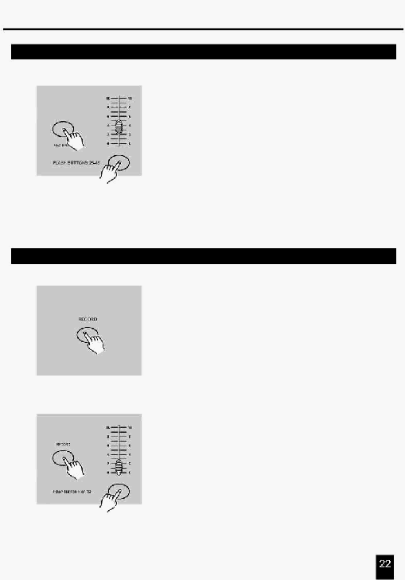

2. Опис інструкцій
2.3.4 Запуск Програми зі стандартним тактом (Standard Beat)
5.
Натиснувши й утримуючи кнопку Rec Speed, натисніть
кнопку Flash (25-48) до якої прив'язана Програма.
6.
Програма буде запущена пізніше із установленим
часом або тактом при переході.
7.
Повторіть пункти 4 й 5 для установки нового часу такту.
2.4 Зміна режиму Швидкості (Speed) між 5 й 10 хвилинами
1. Натисніть й утримуйте кнопку Record.
2. Натисніть кнопку Flash 5 або 10 три рази при цьому
втримуючи натиснутою кнопку Record.
3.
Засвітиться індикатор 5 MIN або 10 MIN указуючи на те,
що повзунок Speed установлений у режим запуску 5
або10 хвилин.
Натисніть цю
кнопку три рази